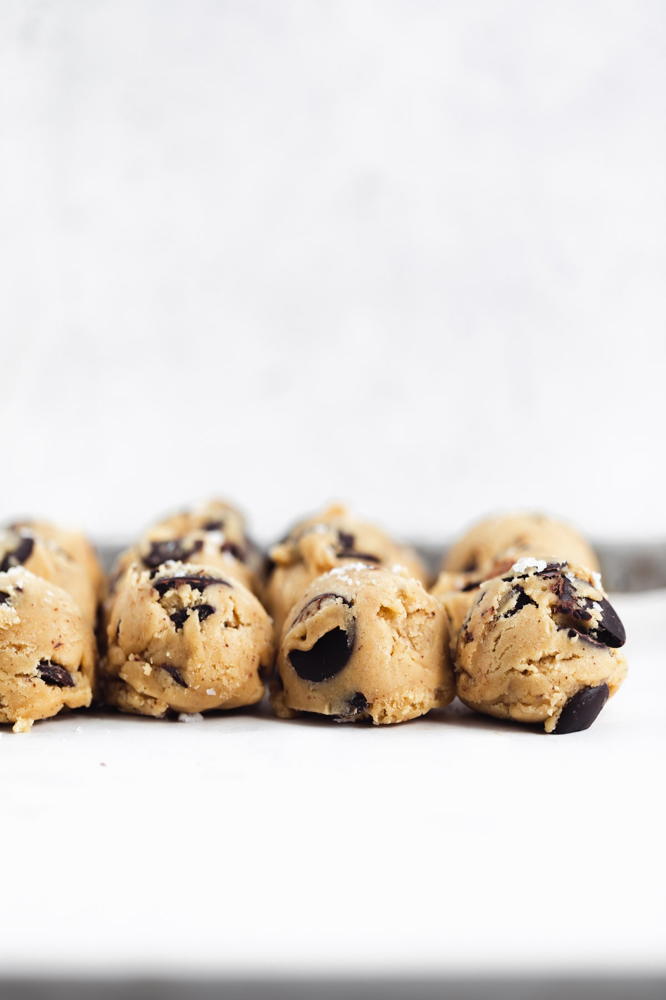

This website uses affiliate links which may earn commission for purchases made at no additional cost to you.
Your search for the best chocolate chip cookies ends here. This chewy chocolate chip cookie recipe is made with
browned butter and huge chunks of chocolate for the perfect, crunchy on the outside, gooey in the middle cookie
of your dreams. Pair one of these bad boys with a glass of cold milk for the best cookies and milk of your
life!
Looking for more chocolate chip cookies? Check out my s'mores cookies or my espresso chocolate chip cookies for
a little pick me up!
The Best Chocolate Chip Cookies
Alright. Take a deep breath. We're about to get into what I would equate to my life's thesis: the best
chocolate
chip cookie recipe ever. This recipe is literally 10 years in the making. They're soft, chewy, crunchy on the
edges, perfectly salty-sweet, loaded with juuuust the right amount of chocolate. And when you create something
that perfect, it would be a true crime to not share it with the world.
So without further adieu, I present the best chocolate chip cookie recipe you'll ever make.
Ingredients for perfect chocolate chip cookies.
You're only as good as your ingredients. We recommend you splurge for all of the ingredients below to ensure
you
get a gourmet chocolate chip cookie.
Unsalted Butter: Using unsalted butter means that you can fully control the amount of salt going into your
cookies and also ensures that it browns evenly. You'll brown the butter for a nutty, toasty deep flavor as
the
base for your cookies!
Light Brown Sugar: I like to make chocolate chip cookies with a combination of light brown sugar and
granulated sugar. The light brown sugar will keep your cookies soft and chewy and give them that delicious
brown sugar-y taste.
Granulated Sugar: A little granulated sugar will give your cookie the perfect amount of crunch on the
edges.
You get the best of both worlds.
Eggs: Eggs will bind your cookies together. A single egg and one egg yolk will gives these cookies their
soft,
chewy, not too cakey texture.
Vanilla Extract: Vanilla is so essential to chocolate chip cookies. I know it might seem unimportant
because
you use a small amount of it, but it will take your cookies to the next level. I highly recommend using a
100%
pure vanilla extract if your budget allows. ALDI has a super affordable one, or if you're down to splurge I
love Rodelle!
Flour: All purpose flour is our flour of choice for these chewy cookies. It creates a tender but hearty
crumb.
Make sure when you are measuring your flour you measure it carefully using a spoon to aerate the flour. We
recommend adding the first cup in and then adding the remaining 3/4 cup a little at a time to make sure
you're
not adding too much flour! Browned butter evaporates as it browns, meaning that the amount of butter can
vary
depending on how long you browned it for which can lead to less liquid in your cookie dough. See the
directions
for more guidance on this!
Baking Soda: A little baking soda will give your cookies the perfect rise and crackle on top. Be sure
you're
using baking soda (not baking powder)! I'm lazy so I don't stir the dry ingredients together in a separate
bowl, but I like to add the flour and then the salt and baking soda on top before folding so that the baking
soda and salt get incorporated properly!
Chocolate: When it comes to chocolate chip cookies, your chocolate can make or break your cookie. Splurge
on
a
high quality semi sweet or dark chocolate. Milk chocolate is child's play. So are the store brand chocolate
chips. Go for a good bar, chocolate disks, or high quality chocolate chunks. Whatever you choose, use 1 1/2
to
2 cups of it (depending on how chocolatey you like your cookies) and load up your cookie dough for big,
melty
pools of chocolate throughout your cookie.
Salt: Baked goods NEED salt. Without it they're just cloyingly sweet. Salt adds that perfectly nuanced
salty-sweet flavor that pushes a baked good from good to great.

How to make brown butter:
If you haven't had brown butter yet, you MUST try it. Browning your butter gives it an amazing complexity that
enhances so many recipes.
Start by melting your butter over medium heat in a small sauce pan.
Whisk the butter constantly as it melts to ensure it's evenly heated. As it melts the butter will start to
foam. This is the sweet point between boiling the butter (NOT what you want) and not hot enough.
Keep a close eye on the butter. I mean it-DO NOT WALK AWAY. As it transitions from its usual yellow color
to
a deeper golden hue and at last to a beautiful light golden brown. You'll know it's done by the smell: a
nutty, caramelized aroma that is absolutely heavenly.
The Three Don'ts of Chocolate Chip Cookie Baking
These chocolate chip cookies have been tested thousands of times (I wish this were an exaggeration), so you can
trust that I have all the tricks for you. Start taking notes!
Don't you dare forget the salt and the vanilla: These two ingredients make or break a cookie. Get the good
vanilla and the flaky sea salt. I promise it will be worth it.
Don't over mix: Repeat after me, “overmixing ruins everything.” I know it can be fun to whisk away and
overwork your dough as an excuse to eat more cookie dough, but do not do it.mYou will get dry, tough, sad
cookies if you overwork the dough, so once you stir in the flour only mix until no streaks of flour remain!
Don't over bake: In fact, when in doubt UNDER bake. The cookies will continue to bake as they cool. Plus,
no
one ever complained about a gooey center üôÇ
Do you need to chill your chocolate chip cookie dough balls before baking?
Yes. But also no. Okay, let me explain.We highly recommend chilling your dough for at least 30 minutes. Giving
the dough time to rest will allow the flour to absorb and the flavors to really settle in. This will create a
super
soft gooey center, while still preserving those crackly edges. If you bake your cookies off right away you'll
get a less complex flavor, the cookies will spread a more, and the tops will be a little more craggy. They will
still be delicious, but I promise they will be so much tastier if you give them a few hours in the fridge. My
preferred sweet chill is at least 2 hours, but I often chill these overnight and bake off the batch the next
day!
To make scooping the cookies easier, I like to chill the dough for 30 minutes to let it firm up a little and
then
use a cookie scoop (or tablespoon if you don't have one!) to scoop the dough out into balls. You can then place
the balls in an airtight container or covered tightly on a baking sheet lined with parchment paper until ready
to bake.
Can you freeze these cookies?
Heck yeah you can! You can either freeze your cooked cookies or the cookie dough balls (my personal fav).
Here's
how to do it:
Freeze the cookie dough. This is my favorite way to freeze these cookies, because then you can get ooey
gooey, warm cookies whenever you want. Prepare the recipe as directed and then place the cookie dough balls
in the
freezer in a freezer safe plastic bag. When you're ready to bake your cookies (or single cookie!), remove
the ball from the freezer and allow it to come to room temperature (about 30ish minutes). Then bake
according to
directions!
Freeze the baked cookies. This is also an excellent way to prep ahead of time! Bake your cookies as
directed
and then allow them to cool COMPLETELY (this is so important, otherwise you'll get funky ice crystals on
your frozen cookies). Place the cookies in a freezer safe plastic bag in a single layer and freeze for up to
3
months. When you're freezing the made cookies it's also important to under bake them so they stay nice and
soft!
I mean, c'mon. LOOK AT THAT GOOEY, MELTY COOKIE. Have you ever seen a more beautiful sight? I think not.
How to Store Chocolate Chip Cookies
Can you make chocolate chip cookies ahead? How to freeze these best chocolate chip cookies? All your questions
answered below!
These chewy chocolate chip cookies are best freshly baked. These are not the cookies I would recommend sending
in
the mail to a friend, or baking a few days before the party you're bringing them to. They will last in a sealed
container for 3 days, but definitely start tasting a little stale after day 2.
Our advice? If you want to prep ahead, make the dough in advance and scoop out balls of cookie dough. Place the
cookie dough in a freezer plastic bag and freeze the cookie dough for up to 3 months for whenever you want
fresh
baked cookies!
You can also freeze the baked cookies in a freezer bag for up to 3 months so you can whip out a bag of homemade
cookies any time without having to light the oven! If freezing, bake the cookies as directed and let them cool
completely on your cooling rack before freezing!
Make sure you incorporate a cookies and milk break into your day today with these chewy chocolate chip cookies!
XX
Sofi
The Best Chocolate Chip Cookies
Prep Time: 15 minutes
Cook Time: 11 minutes
Total Time: 26 minutes
Yield: 15 cookies
Ingredients
3/4 cup (168 g) unsalted butter*
1 cup (200 g) brown sugar, packed
1/4 (50 g) cup granulated sugar
1 egg + 1 egg yolk, room temperature
1 tablespoon pure vanilla extract
1 3/4 cup (220 g) all-purpose flour
3/4 teaspoon baking soda
3/4 teaspoon kosher salt + more flaky seat salt for sprinkling
1 1/2 cups semi sweet chocolate (225 g), chopped
Instructions
Brown the butter over medium heat, stirring constantly until the butter begins to foam and turns a
golden
brown, emitting a nutty aroma. Make sure you only brown the butter lightly. When butter browns the liquid
evaporates off which can dry out your dough. As soon as the butter starts to turn brown and smell nutty,
take
it off the heat to prevent any more liquid from escaping. Take butter off the heat and allow to cool.
In a large mixing bowl combine the cooled brown butter, brown sugar, and white sugar. Beat until mixed
together. Add in the egg, egg yolk, and vanilla extract. Mix well.
In separate bowl mix together the flour, salt and baking soda. Mix half the dry ingredients into the wet
until
everything comes together. Slowly add in the remaining flour a little bit at a time, stopping if the
dough
starts to get too dry.* Fold in the chocolate. Do not over mix.
Refrigerate the cookie dough for at least a half hour, or overnight.
When you are ready to bake the cookies, preheat the oven to 350°F and line a cookie sheet with parchment
paper. Use a 1.5 or 2 ounce cookie scoop to scoop the cookie dough out into balls, placing them 2 inches
apart
on the prepared sheet. Bake for 11 minutes*, or until the edges are just golden brown and the centers
have
puffed up but are still gooey.
If you want to be really precise about it, my butter is always at 140 grams after being browned. If you
have
less left over you can add milk until it reaches 140 grams!
Browned butter can evaporate off at different levels, so sometimes you may be left with less liquid than
others. For this reason, we recommend adding the flour in increments to make sure you're not adding too
much
and left with a dry dough.
Every oven is different, so make sure you keep an eye on your cookies. We recommend taking them out
right
when
they have puffed up and just turning golden brown on the edges. The cookies should still be raw in the
middle.
If you leave them in past this point they will not have that gooey center you're looking for.